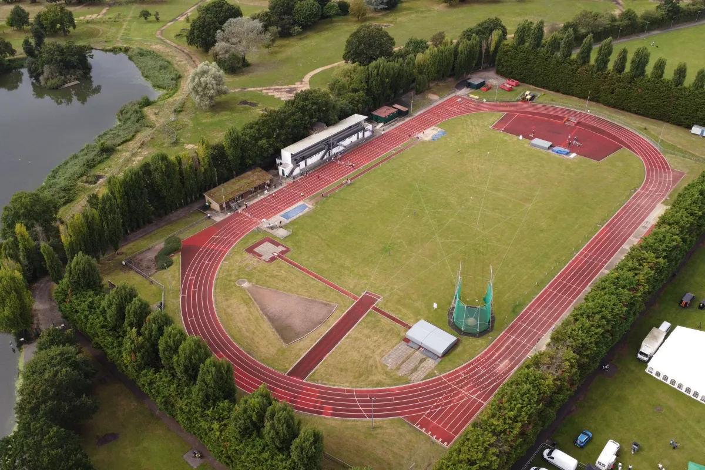
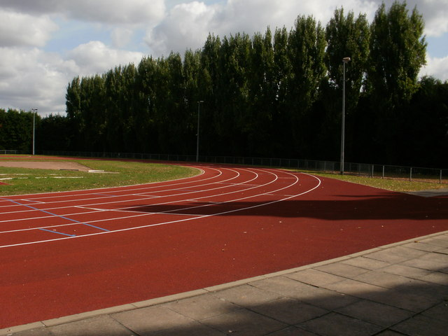
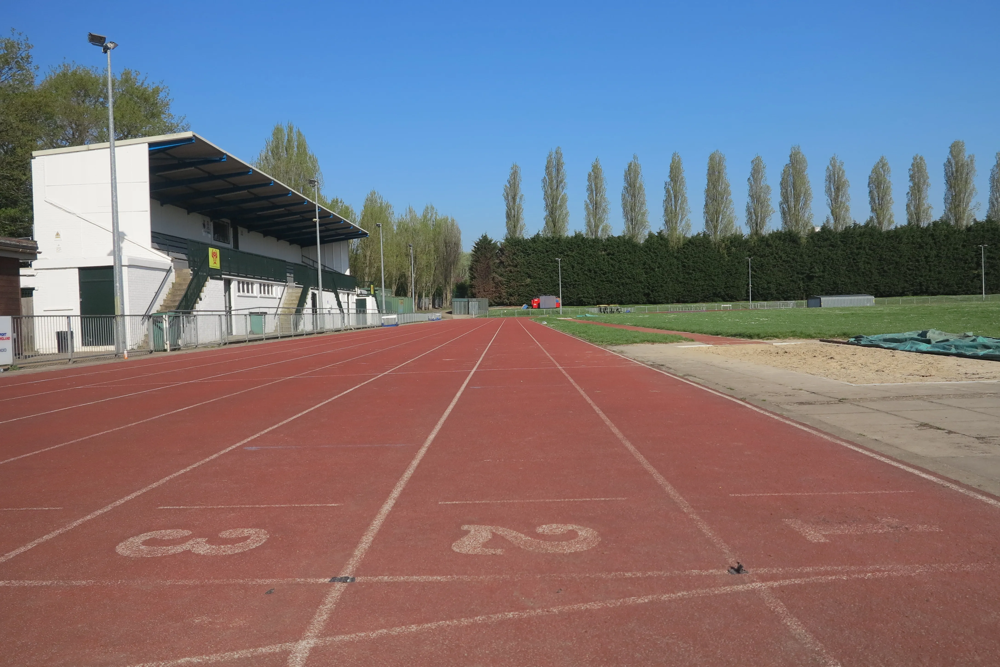

Wimbledon Park Track
400m Synthetic 6 lanes, 8 sprint lanes
About the Track
Wimbledon Park Athletics Track is a 400m synthetic track located within the grounds of Wimbledon Park in southwest London. Opened in the early 1950s, it was upgraded from a cinder surface to synthetic in 1990 and underwent major improvements in 2005. The track has six lanes, with an eight-lane home straight, and is equipped for a wide range of track and field events. It is home to Hercules Wimbledon AC and is also used by other local athletics and running groups. Surrounded by the park's greenery, it provides a distinctive setting for athletics in southwest London.


